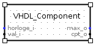
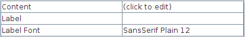
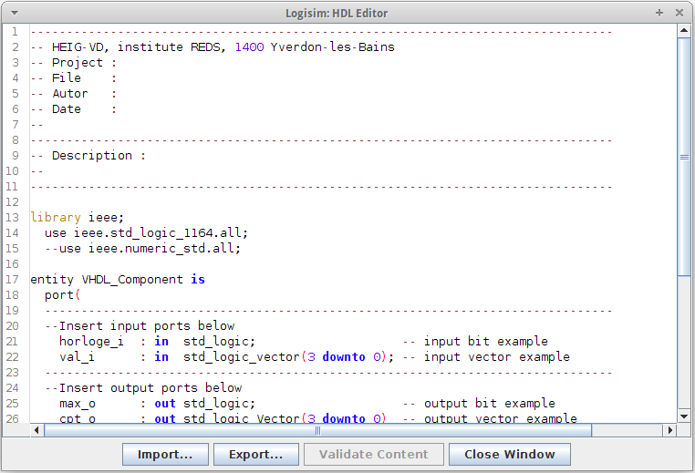

VHDL 实体
VHDL 实体是一种可用 VHDL 描述的组件。它自带编辑器，可用于编辑并验证实体；验证功能要求系统中已安装 Questa Advanced Simulator。
创建 VHDL 实体
要创建新的 VHDL 实体，请在资源管理器窗格中打开HDL IP库，然后单击VHDL 实体组件。如果该库不可用，需要先加载它：打开项目菜单，选择加载库，再选择内置库，并从菜单中选择HDL IP。

编辑 VHDL 实体

新建的 VHDL 实体带有一个默认模板，其中包含两个输入和两个输出。如下图所示，单击内容属性即可编辑实体。

随后可以使用集成 HDL 编辑器，直接用 VHDL 修改实体。也可以单击导入 VHDL…按钮导入 VHDL 文件内容，或单击导出 VHDL…按钮导出自己的代码。

编辑组件时，验证 VHDL按钮会亮起。只要已安装并配置 Questa Advanced Simulator（更多信息请参见配置 Questa Advanced Simulator），就可以使用该按钮检查代码是否有效。配置完成后，单击验证 VHDL按钮会编译 VHDL 代码并检查错误；如果发现错误，会显示包含更多信息的窗口。如果代码有效，该按钮会重新禁用，直到再次修改内容。
注意： 如果没有 Questa Advanced Simulator，或者它被禁用，Logisim 仍会进行一些检查，主要是针对端口描述。
完成实体编辑后，可以单击关闭窗口按钮。如果 Questa Advanced Simulator 已安装并启用，代码会由它进行验证，Logisim 也会自动重新生成实体符号，并添加、删除或更新代码中新增、移除或修改过的端口。如果验证过程中发生错误，会显示包含更多信息的窗口，并提供三个选择：
- 仍然关闭并放弃所有修改。单击是即可执行此操作。请注意，对实体所做的任何更改都将永久丢失。
- 返回编辑器并更正错误。单击否即可执行此操作。
- 创建 VHDL 代码备份并关闭编辑器。单击创建备份按钮，然后为备份文件选择文件夹和名称即可执行此操作。
使用 VHDL 实体
VHDL 实体的使用方式与其他组件相同。唯一显著的区别在于仿真中如何处理实体。详细说明请参见VHDL 仿真器。